기상기사 (2012-03-04 기출문제)
1과목: 기상관측법
1. 노장(露場)의 조건 중 적합하지 않은 것은?
- 그늘이 지지 않는다.
- 건물로부터 건물 높이의 4배 이상 떨어져 있다.
- 높지 않은 언덕 위에 있다.
- 키가 작은 잔디가 깔려 있다.
(정답률: 81%)

2. 빙정(氷晶)과 수적(水適)으로 되어 있으며 시각(視角)이 1 ~ 5도이고 풍하측에 렌드형이 될 때도 있는 기본운형은?
- 권적운(Cc)
- 고적운(Ac)
- 층적운(Sc)
- 고층운(As)
(정답률: 62%)
3. 일반적으로 눈이 비보다 레이더로 탐지하기가 힘든 이유로 가장 적절한 것은?
- 눈은 비보다 온도가 낮기 때문이다.
- 비보다 눈이 자주 내리지 않기 때문이다.
- 눈은 비보다 입자 크기가 크기 때문이다.
- 얼음의 유전 상수가 비보다 작기 때문이다.
(정답률: 96%)
4. 고형강수(固形降水, solid precipitation)가 아닌 것은?
- 비[우(雨), rain]
- 눈[설(雪), snow]
- 우박[박(雹), hail]
- 싸락눈[설산(雪霰), snow pellets]
(정답률: 96%)
5. 구름 중 전체로는 층을 형성하나 뭉클뭉클한 모양의 하층운이며, 우리나라에서 출현율이 평균 약 70%로 흔한 운형은?
- 권층운(Cs)
- 고층운(As)
- 난층운(Ns)
- 층적운(Sc)
(정답률: 72%)
6. 기압값의 보정 시 관측소의 중력이 표준중력보다 클 때(A)와 적을 때(B) 중력 보정값의 가감은?
- A : 더한다, B : 더한다.
- A : 더한다, B : 감한다.
- A : 감한다, B : 감한다.
- A : 감한다, B : 더한다.
(정답률: 95%)
7. 지중 온도계의 측정 깊이에 해당되지 않는 것은?
- 5 cm
- 10 cm
- 20 cm
- 40 cm
(정답률: 84%)
8. 실효습도의 단위는?
- mm
- m/sec
- %
- ℃
(정답률: 95%)
9. 항공기상 관측 전문에서 21RERA가 뜻하는 것은?
- 비가 오다 그쳤다.
- 비가 계속 온다.
- 비가 강하게 온다.
- 비가 약하게 온다.
(정답률: 87%)
10. 대형 증발계로서 증발량을 관측할 때 필요한 보정은?
- 해면 보정
- 중력 보정
- 온도 보정
- 기차 보정
(정답률: 77%)
11. 하이드로메타(hydrometer)는 무엇을 측정하기 위한 계측기인가?
- 기체의 비중
- 액체의 비중
- 고체의 비중
- 수증기의 비중
(정답률: 71%)
12. 직달일사계의 측정 원리에 의한 분류에 해당하지 않는 것은?
- 열량계 방식
- 전기보상 방식
- 쌍금속판 방식
- 전방산란 방식
(정답률: 43%)
13. 위성관측을 통한 강수량 관측의 장점이 아닌 것은?
- 공간분포가 규칙적이고 해상도가 양호하다.
- 사막이나 고지대, 바다 등 실측이 어려운 지역의 관측이 가능하다.
- 우량계와 비교해서 관측주기가 짧아 상세한 자료를 제공한다.
- 넓은 영역에 대한 관측이 가능하다.
(정답률: 97%)
14. 다음 중 시정(視程)에 대한 설명 중 올바르지 않은 것은?
- 목표물이 검은빛을 띤 수목인지 건물인지 등을 인정할 수 있는 최대거리를 그 방향의 시정이라 한다.
- 목측관측에서 눈이 안 좋을 때는 쌍안경이나 망원경으로 관측해야 한다.
- 비행중의 항공기에서 본 수평 방향의 시정을 비행시정(飛行視程)이라 한다.
- 시정이 방향에 따라 다를 때, 전방향의 반 이상에 대응하는 시정을 우시정(優視程)이라 한다.
(정답률: 100%)
15. 기상관측에서 풍속의 측정으로 옳은 것은?
- 순간풍속
- 1 분간의 평균풍속
- 5 분간의 평균풍속
- 10 분간의 평균풍속
(정답률: 100%)
16. 다음 바람 중 큰 규모 기압분포에 의하여 부는 것은?
- 해륙풍
- 산곡풍
- 지균풍
- 활강풍
(정답률: 95%)
17. 종관지상관측에 반드시 포함되어야 하는 요소로만 구성된 항목은?
- 기온, 습도, 기압변화 경향
- 기온, 운향, 풍향풍속
- 습도, 운량, 지면상태
- 일기, 운량, 시정
(정답률: 69%)
18. 레윈존데(Rawinsonde)로 측정되지 않는 기상요소는?
- 기압
- 기온
- 풍속
- 일사
(정답률: 95%)
19. 강수입자의 모양과 강수형태의 분류가 가능한 관측장비는?
- 도플러 레이더
- 편파 레이더
- NEXRAD 레이더
- C 밴드 레이더
(정답률: 71%)
20. 정지기상위성의 고도는 대략 몇 km 인가?
- 358 km
- 3580 km
- 35800 km
- 358000 km
(정답률: 95%)
2과목: 대기열역학
21. 비습(specific humidity)에 대해 올바르게 설명된 것은?
- 습윤 공기 중에 포함되어 있는 수증기의 밀도와 습윤공기 전체 밀도의 비
- 습윤 공기 중의 수증기의 밀도와 건조공기의 밀도와의 비
- 습윤 공기 중의 1 g의 건조공기와의 공존하는 수증기의 질량
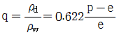
(단, q : 비습, ρd : 건조공기의 밀도, ρw : 수증기밀도, p : 대기압, e : 수증기압)
(정답률: 78%)
22. 다음 설명 중 틀린 것은?
- 습윤단열감율은 건조단열감율보다 작다.
- 포화상태에서의 기온은 이슬점온도와 같다.
- 건조 공기의 경우 기온은 가온도와 같다.
- 정적비열은 정압비열보다 크다.
(정답률: 100%)
23. 등온위과정에서 열역학 제1법칙은 어떻게 표현되는가?
- Δq = pΔa
- Δq = aΔp
- Δq = CvΔT
- Δq = 0
(정답률: 69%)
24. 습도를 표시하는 것 중 단위질량의 건조공기와 공존하고 있는 수증기의 질량의 비에 해당하는 것은?
- 혼합비
- 비습
- 포차
- 상대습도
(정답률: 89%)
25. 습윤단열선에 따라서 일정한 것은?
- 위습구온도
- 위습구온위
- 온위
- 습도
(정답률: 74%)
26. 등적비열(Cv)과 등압비열(Cp)에 관한 관계식 중 옳은 것은? (단, R은 기체상수이다.)
- Cv = Cp + 2R
- Cp = Cv + 2R
- Cv = Cp + R
- Cp = Cv + R
(정답률: 95%)
27. 대기 경계층에서 역전층이 잘 형성되는 층으로 짝지어진 것은?
- 지표층 - 전이층
- 지표층 - 혼합층
- 혼합층 - 구름층
- 에크만 층 - 구름층
(정답률: 79%)
28. 열역학 제2법칙의 설명으로 가장 적합한 것은?
- 계(系)의 상태를 정의하는 열역학적 변수 사이의 관계를 나타낸다.
- 열역학 계(系)의 에너지 보존법칙이다.
- 열역학 과정에서 열이 흘러가는 방향을 명시한다.
- 복사열의 이동을 나타낸다.
(정답률: 75%)
29. 1 Pa는 몇 mb인가?
- 10-1mb
- 10-2mb
- 1mb
- 10mb
(정답률: 77%)
30. 열역학 제1법칙의 표현으로 옳은 것은? (단, q 는 열량, u 와 h 는 각각 내부에너지와 엔탈피, v 는 체적, w 는 계가 한일, Cp 와 Cv 는 각각 정압비열과 정적비열이다.)
- δq = du - dw
- δq = dh - dw
- δq = CvdT - pdv
- δq = CpdT - vdp
(정답률: 48%)
31. 습윤 공기를 단열 상승시킨 후 수증기가 모두 제거되고 다시 단열과정을 거쳐 원 위치로 되돌아 왔을 때의 온도는?
- 습구온위(Wet-bulb potential temperature)
- 습구온도(Wet-bulb temperature)
- 상당온위(Equivalent potential temperature)
- 상당온도(Equivalent temperature)
(정답률: 59%)
32. dθ를 위습구온위의 미소변화, dZ를 고도의 미소변화라고 할 때
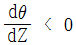
인 경우의 대기 안정도는?- 절대 안정
- 잠재 불안정
- 대류 불안정
- 조건부 안정
(정답률: 70%)
33. 건조 단열감율, 습윤 단열감율, 실제 기온감율을 각각 γd, γs, γ 라고 할 때 γd ＞ γ ＞ γs 인 경우의 대기상태는?
- 잠재 불안정
- 절대 불안정
- 조건부 불안정
- 대류 불안정
(정답률: 80%)
34. 기온의 역전층에 관련된 설명과 가장 거리가 먼 것은?
- 대기오염농도가 높다.
- 복사안개가 발생한다.
- 맑은 날 새벽에 나타나는 기온의 연직분포 특징이다.
- 태양의 국지 가열로 저기압이 형성된다.
(정답률: 82%)
35. 등온대기에서의 규모고도(scale height)는? (단, g는 중력, R은 기체상수, Cp는 정압비열, T, Po, p는 각각 기온, 기압, 밀도이다.)
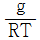
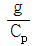
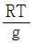
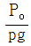
(정답률: 73%)
36. 다음 중 단위가 다른 하나는?
- 잠열
- 엔탈피
- 내부에너지
- 비열
(정답률: 62%)
37. 가로축을 부피, 세로축을 압력으로 하는 좌표면에서 등온선의 형태는? (단, 이상기체의 경우를 가정하시오.)
- 직선
- 포물선
- 쌍곡선
- 대수곡선
(정답률: 90%)
38. 압력이 일정한 상태에서 27℃의 건조공기를 87℃까지 승온하였을 때 온위는 절대온도로 몇 배 증가되는가?
- 1.0 배
- 1.2 배
- 3.2 배
- 60 배
(정답률: 77%)
39. 상당온위(Equivalent potential temperature)에 대한 설명으로 옳은 것은?
- 건조단열과정에서만 보존된다.
- 습윤단열과정에서만 보존된다.
- 건조∙습윤단열과정 모두에서 보존된다.
- 보존되지 않는다.
(정답률: 53%)
40. 물의 상관계를 나타내는 압력-온도 다이아그램에서 3중점에서 해당되는 점에서 압력(hPa)과 온도(K)가 옳게 짝지어진 것은?
- 6.11, 273
- 6.22, 283
- 5.97, 293
- 6.77, 303
(정답률: 70%)
3과목: 대기운동학
41. 그림으로부터 지균풍속을 구하는 공식은? (단, ρ는 대기밀도, Ω는 지구의 각속도, ø는 위도)
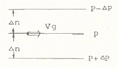
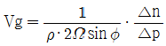
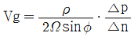
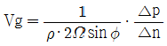
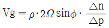
(정답률: 73%)
42. 운동방정식을 이루는 다음 항 중에서 가장 큰 항은?
- 수평기압경도력
- 전향력
- 중력
- 마찰력
(정답률: 84%)
43. 마찰이 없을 때 절대소용돌이도는 보존된다. 이 경우 북상하는 공기덩이의 상대소용돌이도는?
- 일정하다.
- 감소한다.
- 증가한다.
- 증가와 감소를 되풀이한다.
(정답률: 71%)
44. 북반구 중위도에서 동서규모와 남북규모가 비슷하고 동서방향 파장이 6000 km인 순합 로스비파의 위상속도는?
- 동쪽으로 8 ms-1
- 서쪽으로 8 ms-1
- 동쪽으로 16 ms-1
- 서쪽으로 16 ms-1
(정답률: 50%)
45. 지구 대기에서 평균 규모고도(scale height)는 약 몇 km인가?
- 5 km
- 8 km
- 15 km
- 20 km
(정답률: 79%)
46. 지균풍은 등압선이 직선인 경우에 기압경도력과 전향력이 균형을 이루는 균형류이므로 경도풍을 지균풍으로 근사할 경우 오차가 발생한다. 이에 대한 설명 중 틀린 것은?
- 북반구에서 시계반대방향의 경도풍을 지균풍으로 추정하면 지균풍은 과대 추정되어진다.
- 북반구에서 시계방향의 경도풍을 지균풍으로 추정하면 지균풍은 과소 추정되어진다.
- 로스비수가 작을수록 오차는 작아진다.
- 로스비수가 클수록 오차는 작아진다.
(정답률: 65%)
47. 북반구의 겨울철에 잘 발달하지 않는 기압계는?
- 시베리아 고기압
- 북미 고기압
- 알류션 저기압
- 북태평양 고기압
(정답률: 95%)
48. 대류권계면(tropopause)이 가장 높은 곳은?
- 극지방
- 위도 60도
- 위도 30도
- 적도지방
(정답률: 90%)
49. 등고도 좌표계에서 등압면 좌표계로 좌표변환하면 예단방정식(prognostic equation)이 진단방정식(diagnostic equation)으로 바뀌는 것은?
- 운동방정식
- 와도방정식
- 정역학방정식
- 연속방정식
(정답률: 61%)
50. 500 hPa 의 등고선을 나타낸 아래 그림에서 양의 와도가 가장 큰 곳은?
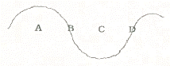
- A
- B
- C
- D
(정답률: 89%)
51. 다음 중 지면 근처에서 난류가 가장 약한 경우는?
- 여름철 맑은 날 한낮
- 바람이 강한 저녁
- 복사안개 낀 아침
- 바람 약하고 구름 없는 날 정오
(정답률: 62%)
52. 다음 위도대 중 바람이 가장 약한 곳은?
- 북위 15도 부근
- 북위 30도 부근
- 북위 45도 부근
- 북위 60도 부근
(정답률: 75%)
53. 구면좌표계(spherical coordinate)에서의 운동 방정식을 대규모 공기의 운동에 적용하면 수직가속도 성분과 코리올리항을 무시할 수 있는데 이 때 얻을 수 있는 기본 방정식은?
- 연속 방정식
- 상태 방정식
- 에너지 방정식
- 정역학 방정식
(정답률: 85%)
54. 지름이 100 km인 순압소용돌이(barotropic vortex)가 각속도 ω로 강체회전을 하고 있다. 이 소용돌이가 크기를 그대로 유지한 채로 북위 30도에서 북극으로 이동한다면 이 공기덩이의 각속도는? (단, Ω는 지구자전각속도를 나타낸다.)
- ω - Ω
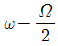
- Ω - ω
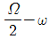
(정답률: 84%)
55. 주요 대기운동은 서쪽에서 동쪽으로 이동한다. 그 이유로서 관계가 가장 먼 것은?
- 지구의 자전
- 적도지방과 극지방 사이의 온도차
- 적도지방과 극지방 사이의 기압차
- 육지와 바다의 존재
(정답률: 81%)
56. 지표층(surface layer)과 역학적 에크만층(Ekman layer)에 대한 일반적인 설명으로 틀린 것은?
- 지표층(surface layer)에서는 에디의 크기가 높이에 비례한다.
- 에크만층(Ekman layer)에서는 에디의 크기가 높이에 따라 일정하다.
- 지표층(surface layer)에서는 수평 마찰응력(stress)이 높이에 따라 거의 일정하다.
- 에크만층(Ekman layer)에서는 바람이 지수함수(log)적으로 증가한다.
(정답률: 46%)
57. 마찰이 없는 상태에서 기압장이 수평적으로 균일하여 기압경도력이 없는 경우에 일어나는 바람은?
- 관성풍
- 지균풍
- 선형풍
- 경도풍
(정답률: 56%)
58. 전향력이 가장 큰 곳은?
- 적도
- 극
- 해양
- 대륙
(정답률: 78%)
59. 바람이 약하고 구름 없는 여름철 한낮에 나타날 수 있는 플럭스 리차드슨 수(flux Richardson's number)의 값은?
- -1
- 0
- 0.25
- 1
(정답률: 71%)
60. 종관규모 저기압의 수평 규모는?
- 10 km
- 100 km
- 1000 km
- 10000 km
(정답률: 91%)
4과목: 기후학
61. 강수의 일변화에 관한 설명 중 해양형에만 해당하는 것은?
- 최고 기온이 나타날 무렵에 강수가 많다.
- 고위도보다 저위도 지방에서 뚜렷하다.
- 여름보다는 겨울에 강수현상이 뚜렷하다.
- 밤에 대기가 불안정할 때 많은 강수가 있다.
(정답률: 65%)
62. 우리나라가 속하는 풍계는?
- 북동무역풍 지대
- 편동무역풍 지대
- 편서풍 지대
- 편동풍 지대
(정답률: 85%)
63. 열섬(heat island)에 대한 설명 중 틀린 것은?
- 열섬은 도시 내의 열방출로 인해 발생한다.
- 열섬은 도시 내의 오염물질을 잘 확산시킨다.
- 열섬으로 인해 도심지에는 약한 저기압이 형성된다.
- 열섬은 강풍이 불 경우 잘 나타나지 않는다.
(정답률: 79%)
64. 다음 시기 중 지구와 태양 사이의 거리가 가장 먼 때는?
- 3월 21일 경
- 6월 22일 경
- 9월 23일 경
- 12월 21일 경
(정답률: 85%)
65. 다음 중 산풍(mountain breeze)이 가장 잘 발달할 수 있는 곳은?
- 밤에 바람이 약하고 구름이 많이 끼는 곳
- 밤에 바람이 강하고 구름이 많이 끼는 곳
- 밤에 바람이 약하고 맑은 곳
- 밤에 바람이 강하고 맑은 곳
(정답률: 100%)
66. 겨울철 우리나라에 주로 나타나는 기단은?
- cPKs
- cPWs
- cPKu
- cPWu
(정답률: 67%)
67. 전 지구 기온 분포의 특색에 대한 설명 중 틀린 것은?
- 일반적으로 양반구가 다 같이 적도에서 극으로 갈수록 기온이 낮아진다.
- 대륙에는 여름에 심한 고온지역이 나타나고 겨울에는 심한 저온지역이 나타난다.
- 같은 위도권에서는 남반구보다 북반구가 여름과 겨울의 차가 크다.
- 남반구가 북반구보다 기온의 지역적 차가 크고 특히 여름에 심하다.
(정답률: 91%)
68. 다음 중 푄(Fo"hn)풍과 같은 종류의 바람인 것은?
- 보라(Bora)
- 치누크(Chinook)
- 미스트랄(Mistral)
- 노서(Norther)
(정답률: 100%)
69. 다음 중 장마전선의 형성과 가장 관계가 깊은 기단은?
- 대륙성 한대기단과 대륙성 열대기단
- 대륙성 열대기단과 해양성 열대기단
- 해양성 열대기단과 해양성 한대기단
- 해양성 한대기단과 대륙성 열대기단
(정답률: 100%)
70. 극지방의 해빙의 역할 중 옳지 않은 것은?
- 해빙이 얼 때 바닷물의 염분을 높여 침강류를 유도한다.
- 해빙은 절연체로써 해양이 지나치게 냉각되는 것을 막는다.
- 해빙의 발달은 대기의 남북간의 온도 경도를 증가시켜 중위도 저기압의 활동을 강화시킨다.
- 해빙은 대기와 해양의 열교환을 막아 대기가 지나치게 냉각되는 것을 막아준다.
(정답률: 72%)
71. 기후학에서 다루는 열전달의 과정들을 모두 짝지은 것은?
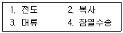
- 1, 2, 3
- 2, 3, 4
- 1, 3, 4
- 1, 2, 3, 4
(정답률: 85%)
72. 다음 중 엘니뇨와 가장 거리가 먼 현상은?
- 강한 편동풍
- 강한 양의 해수온도 아노말리
- 남방진동
- 약한 워커 순환
(정답률: 91%)
73. 몬순의 영향을 받는 한반도의 여름과 겨울 기후특성으로 틀린 것은?
- 여름철 몬순의 대표적인 현상은 장마이다.
- 여름에 일 년 강수량의 절반이상이 내린다.
- 겨울철은 북풍 계열의 바람이 불어 한파가 발생한다.
- 겨울에는 시베리아 기단으로 인해 정체전선의 영향을 주로 받는다.
(정답률: 94%)
74. 우리나라의 겨울철과 같은 한랭 기후 하에서는 냉각효과를 고려한 윈드칠(windchill) 지수를 사용하여 체감온도를 산출한다. 이 지수 계산에 사용되는 기상요소는?
- 습구온도와 증발량
- 기온과 풍속
- 상대습도와 풍속
- 기온과 상대습도
(정답률: 58%)
75. 기후 요소들의 전지구적 분포에 대한 설명으로 옳은 것은?
- 운량은 극지방을 제외하고 북반구가 남반구에 비해 많다.
- 증발량은 아열대 지역에서 최대이고, 극 쪽으로 갈수록 감소한다.
- 일사량은 적도에서 가장 많고 그 다음이 아열대이다.
- 기온은 남반구가 북반구에 비해 지역차가 크다.
(정답률: 57%)
76. 다음 요소 중에서 도심지가 교외에 비하여 일반적으로 작은(또는 낮은) 값을 보이는 것은?
- 일사량
- 강수량
- 기온
- 운량
(정답률: 95%)
77. 기후 분류의 근거와 가장 거리가 먼 것은?
- 지구와 태양의 기하학적 위치변화
- 식생 분포
- 물 수지
- 해류의 영향
(정답률: 48%)
78. 다음 중 지중해성 기후지역이 아닌 것은?
- 리비아 동부 해안
- 미국 캘리포니아
- 호주 남서부
- 아르헨티나 북부
(정답률: 79%)
79. 기후인자에 해당하는 것은?
- 운량
- 일사
- 지형
- 습도
(정답률: 95%)
80. 기온의 연교차가 가장 큰 곳은?
- 대양 중의 섬
- 대륙의 동해안
- 대륙의 서해안
- 대륙의 내륙
(정답률: 82%)
5과목: 일기분석 및 예보론
81. 한랭전선 부근의 단면도에 나타날 수 있는 특징으로 볼 수 없는 것은?
- 전선대는 한기방향으로 기울어져 있다.
- 전선대 부근에서 등풍속선이 조밀하다.
- 전선대 중간부위에 강풍대(jet)가 존재한다.
- 등온선은 전선대를 경계로 꺾인다.
(정답률: 70%)
82. 지구의 지표면 온도를 약 285K라 할 때 최대 에너지가 방출되는 파장의 범위는?
- 0.4 ~ 0.8 ㎛
- 0.9 ~ 4 ㎛
- 5 ~ 8 ㎛
- 10 ~ 11 ㎛
(정답률: 65%)
83. 지상 일기도에서 등압선의 분석 간격은 일반적으로 몇 hPa를 쓰고 있는가?
- 1 hPa
- 2 hPa
- 3 hPa
- 4 hPa
(정답률: 96%)
84. 빛의 가시부분 영역에 포함되는 파장 범위는?
- 0.04 ~ 0.07 ㎛
- 0.4 ~ 0.7 ㎛
- 4.0 ~ 7.0 ㎛
- 40 ~ 70 ㎛
(정답률: 80%)
85. 태풍에 관한 내용 중 틀린 것은?
- 열대수렴대(ITCZ)의 위치에 따라 발생지역이 달라진다.
- 태풍은 위도 5° 이상에서 만들어지는데, 이는 위도 5° 이내에서는 소용돌이를 만드는 데 필요한 전향력이 없기 때문이다.
- 해수면온도가 약 26 ~ 28℃ 부근에서 발생한다.
- 태풍의 발달 에너지는 바람의 연직 시어(shear)이다.
(정답률: 82%)
86. 기온 T, 습구온도 Tw, 이슬점 온도 Td의 관계가 옳은 것은?
- Td ＞ T ＞ Tw
- Td ＞ Tw ＞ T
- Tw ＞ Td ＞ T
- T ＞ Tw ＞ Td
(정답률: 95%)
87. 지상기상전문의 Nddff이 21299 00125 이면 풍속은?
- 129 knots
- 299 knots
- 99 knots
- 125 knots
(정답률: 92%)
88. 북반구에서의 일기도 그림 중 풍향과 풍속이 올바르게 된 것은?
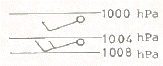
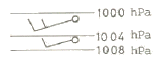
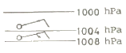
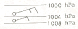
(정답률: 78%)
89. 상층 일기도를 분석하여 대기의 흐름을 파악하고자 할 때, 그 목적에 부합되지 않는 것은?
- 850 hPa 일기도는 전선분석에 용이하다.
- 700 hPa 일기도는 기압골의 강도, 온도이류, 수증기 분포를 파악하는데 주로 사용한다.
- 500 hPa 일기도는 대류권의 중간층으로, 기압골과 기압능의 세기를 파악하는데 이용한다.
- 925 hPa 일기도는 지표면의 영향을 받지 않는 대기의 층으로 여름철 지상 기온 예보에 활용한다.
(정답률: 91%)
90. 정지기상위성에서 보내는 위성 영상에는 가시영상과 적외영상이 있다. 이에 대한 특성과 해석법에 대한 내용 중 틀린 것은?
- 가시영상에서 구름 가운데 수분이 많으면 희게 보인다.
- 안개분석은 낮에는 가시영상으로, 밤에는 적외영상으로 한다.
- 겨울철에 시베리아 고기압의 장출로 한기가 남하하면 해양에 줄무늬 모양의 운열을 볼 수 있다.
- 야간에는 적외영상만을 예보에 활용할 수 있다.
(정답률: 62%)
91. 일기도에 사용되는 현재 일기 해설에서 안개를 표시하는 것은?
- ∇
- ＝
- ㆍ
- ≡
(정답률: 89%)
92. 저기압의 예보에 관한 내용으로 틀린 것은?
- 저기압은 온난전선의 이동속도로 이동한다.
- 저기압은 변압경도의 방향으로 이동한다.
- 저기압은 발달하면 이동이 느리다.
- 저기압은 고기압 중심을 관통한다.
(정답률: 74%)
93. 일반적으로 동해안 지방의 폭풍해일은 다음 중 어느 바람이 볼 때 주로 발생하는가?
- 북동풍
- 남동풍
- 남서풍
- 북서풍
(정답률: 69%)
94. 뇌우가 속하는 대기순환의 규모는?
- 대규모
- 종관규모
- 중간규모
- 작은규모
(정답률: 67%)
95. 국제기상전문의 통보에 있어 현재 일기 10의 시정의 제한거리는?
- 100m 이상
- 500m 이상
- 1000m 이상
- 2000m 이상
(정답률: 72%)
96. 대기단열선도(Skew T - log P diagram)에 포함되지 않는 선은?
- 등온선
- 건조단열선
- 포화 혼합비선
- 상대습도선
(정답률: 90%)
97. 전선면의 기울기에 대한 설명 중 옳은 것은?
- 두 기단의 풍속 차에 비례한다.
- 두 기단의 풍속 차에 반비례한다.
- 두 기단의 풍속 차의 제곱에 비례한다.
- 두 기단의 풍속 차의 제곱에 반비례한다.
(정답률: 53%)
98. 저기압 영역에서 대체로 좋지 않는 날씨가 나타나는 원인으로 가장 적합한 것은?
- 기류의 수렴
- 기층의 침강
- 밀도의 증가
- 강수의 증발
(정답률: 79%)
99. 수치 예보 과정을 올바로 설명한 것은?
- 객관분석 → 초기화 → 모델예보 → 출력
- 초기화 → 객관분석 → 모델예보 → 출력
- 초기화 → 모델예보 → 객관분석 → 출력
- 객관분석 → 모델예보 → 초기화 → 출력
(정답률: 67%)
100. 다음 중 등온선이 가장 조밀한 구역은?
- 온난전선부근
- 한랭전선부근
- 고기압의 중심부근
- 온대성 저기압의 온역
(정답률: 67%)